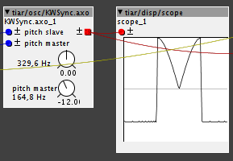
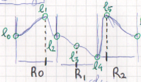
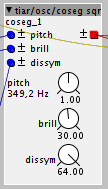

haha, nice! thanks for sharing.
Tiar / SmashedTransistors Contributions
Now.. we can try to add different transitions between vowels...
http://www.phon.ucl.ac.uk/courses/spsci/acoustics/week2-5.pdf
http://www.phon.ucl.ac.uk/courses/spsci/acoustics/week2-6.pdf
but, i think that it is somewhat tricky !!
lokki
#52
well you can fade between s1 and s2 in my formantsettings objects. (via the c inlet, but you have to set them to different vowels to hear actually a difference) otherwise s2 is actually pretty much useless 
but i imagine you want a different transition...
Yes, da di de do du !
I will experiment withh short stops, formant deviations and noise bursts, will be fun !
lokki
#54
more like:
ai ae ao au
ia ie io iu
ea ei eo eu
oa oi oe ou
ua ui ue uo
but stops deviations and bursts sound great to me!
Object tiar/osc/DevilSync
try menu: Help -> Library -> Community -> tiar -> osc -> DevilSync
I call this osc "devil" because its waveform looks like horns...

It is antialiased - including the master sync - by a first order differentiation algo.
{kind=link}
lokki
#61
it's there, but not in the browser. open a new patch, load the object (ZDF SVF 2) and load it's help patch.
Praxis
#62
Sorry, I'm new to this. What do you mean when you say load the object and it's help patch? Where do I find it?
lokki
#63
open a new empty patch, doubleclick on the empty space in the patch and the object browser should come up. type ZDF (yes case does matter, something that maybe should be changed? @johannes) and choose the version two. you now see some sort of preview of the object. click on the black triangle in the top left side of the object and choose help. that's it.
You can also access all the help patches from the Axoloti Editor "Help" menu on the "File Edit Board Window Help" menu bar. That's quite handy 
{kind=link}
Object tiar/osc/KWSync
try menu: Help -> Library -> Community -> tiar -> osc -> KWSync
Yep, I had to do it 
slightly different "horns" and sound compared to the batman/devil one.

Note: First order DPW antialiasing of waveform and internal sync.
Object tiar/osc/6coseg and 6coseg m
try menu: Help -> Library -> Community -> tiar -> osc -> 6coseg
and menu: Help -> Library -> Community -> tiar -> osc -> 6coseg m
This is a 6 cosine segment waveform bandlimited oscillator:

you can control 6 levels and three "ratios".
Modulate the nine parameters for sweet "new age" pads and phase distortion sounds.
Object tiar/kfilter/hyst
try menu: Help -> Library -> Community -> tiar -> kfilter -> hyst
This is a hysteresis comparator (aka Schmitt trigger). It takes a control rate input and has a boolean output.
The hysteresis is set by two level parameters.
This object can be used for debouncing digital inputs connected to switches (see the help patch).
{kind=link}
Object tiar/filter/Butt10
try menu: Help -> Library -> Community -> tiar -> filter -> Butt10
This is a static high order Butterworth filter with ten frequency presets (ranging from 900Hz up to 17.7kHz).
It's meant to be used as a "brickwall" filter, for example just before the output, to mimic the band limitation of some early synthesizers or effects.

Object tiar/osc/coseg sqr
try menu: Help -> Library -> Community -> tiar -> osc -> coseg sqr
This is a low CPU antialiased square wave generator with brilliance (pitch controlled like a low pass filter) and dissymmetry (PWM from 50% to 66%) control.
